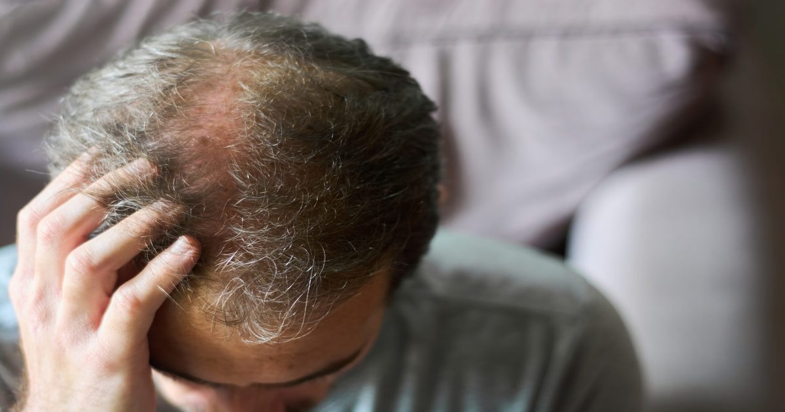

Лазерная терапия при андрогенетической алопеции: принципы подбора и протокола
Фракционный неабляционный лазер рассматривается как вспомогательное средство в комплексной терапии андрогенетической алопеции. Важно понимать, какие пациенты могут получить пользу от процедуры и как строится наблюдение за динамикой.
Критерии отбора пациентов
При выборе кандидатов на лазерную терапию врач оценивает стадию выпадения, плотность оставшихся волос и наличие активных воспалительных процессов на коже головы. Пациенты с ранними формами алопеции и сохранёнными фолликулами чаще демонстрируют положительную динамику, тогда как при запущенных случаях эффект может быть минимальным.
Дополнительно учитываются сопутствующие заболевания, приём системных препаратов и индивидуальная толерантность к тепловым воздействиям. Отсутствие противопоказаний, таких как онкологические процессы в зоне облучения или острые инфекции, является обязательным условием перед назначением курса.
Врач также обсуждает ожидания пациента, объясняя, что лазер служит дополнением к основной медикаментозной терапии и не заменяет её. Чёткое понимание реалистичных целей помогает избежать разочарования и способствует соблюдению рекомендаций по уходу за кожей головы между сеансами.

Особенности протокола лечения
Протокол лечения формируется исходя из типа лазера, длины волны и плотности микрозон воздействия. Обычно выбирают параметры, обеспечивающие мягкое нагревание дермы без образования видимых повреждений эпидермиса, что снижает риск побочных реакций и ускоряет восстановление.
Интервалы между процедурами подбирают индивидуально, опираясь на скорость регенерации тканей и переносимость предыдущего сеанса. Слишком частые воздействия могут перегрузить кожу, а слишком редкие — снизить накопленный стимулирующий эффект на фолликулы.
В протокол часто включают комбинированные подходы: параллельное применение местных стимуляторов роста, коррекция дефицитов микроэлементов и нормализация гормонального фона при необходимости. Такой комплекс усиливает синергию и делает результат более устойчивым.

Мониторинг и оценка результата
Мониторинг проводится с помощью трихоскопии и стандартизированной фотографии в одинаковых условиях освещения и ракурса. Это позволяет объективно фиксировать изменения плотности волос, диаметра стержней и процента терминальных фолликулов во времени.
Данные сравнивают с базовыми показателями до начала курса и с контрольными точками через заданные промежутки. Динамика может быть нелинейной: временное усиление выпадения в первые недели часто сменяется стабилизацией и последующим приростом.
При отсутствии положительной тенденции за несколько контрольных визитов врач пересматривает тактику: корректирует параметры лазера, добавляет или отменяет сопутствующие средства, либо обсуждает альтернативные методы воздействия на фолликулы.
Ограничения и вопросы к специалисту
Несмотря на теоретическую обоснованность, фракционный неабляционный лазер не является универсальным решением для всех форм андрогенетической алопеции. Эффективность зависит от генетической предрасположенности, степени миниатюризации фолликулов и соблюдения пациентом рекомендаций.
Возможные побочные явления включают кратковременную гиперемию, отечность и чувствительность кожи головы, которые обычно уходят самостоятельно в течение суток. Тяжелые осложнения редки, но требуют немедленного обращения к специалисту при появлении признаков инфекции или настойчивого дискомфорта.
Перед началом курса рекомендуется задать врачу вопросы о выбранных параметрах лазера, ожидаемом количестве сеансов, совместимости с текущей медикаментозной терапией и критериях оценки результата. Открытый диалог помогает сформировать реалистичный план и повышает приверженность лечению.
Коротко: Коротко: Фракционный неабляционный лазер может дополнять основную терапию андрогенетической алопеции при грамотном отборе пациентов и индивидуальном протоколе. Регулярный объективный мониторинг позволяет вовремя скорректировать тактику и избежать затрат времени на неэффективные процедуры.
Какие критерии вы считаете главными при выборе дополнительного метода лечения выпадения волос?